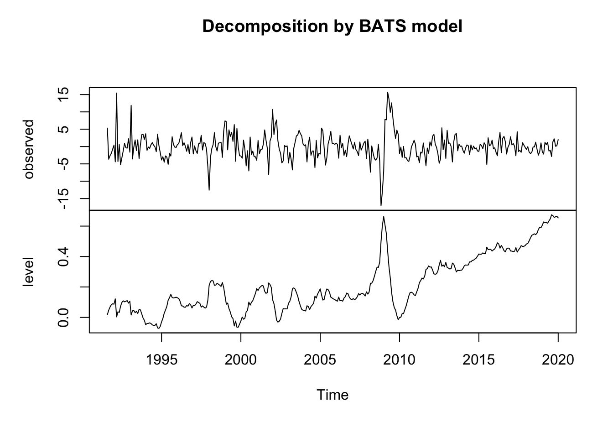

# install packages if needed!
library(zoo)
library(kofdata)
library(tidyverse)
library(forecast)
library(ggplot2)
library(fpp3)Forecast Example - kofdata
This is an example of what you can do with the kofdata package, using time series vintages - aka different versions (or revisions) of the time series
Set up
Import & Inspect Data
We import two different versions of the global KOF Barometer, one version from January 2020 and another from October 2020, to see how the COVID crisis changes the economic revisions.
# read_open_ts(series, date, remote_archive)
baro_vint <- get_collection("globalbaro_vintages")
baro_20201 <- baro_vint$`globalbaro_leading_2020-01`
baro_20210 <- baro_vint$`globalbaro_leading_2020-10`
head(baro_20201) Jul Aug Sep Oct Nov Dec
1991 97.77930 103.11573 99.47100 96.81964 94.86243 94.14232head(baro_20210) Jul Aug Sep Oct Nov Dec
1991 108.90197 101.57483 97.24063 95.75290 113.30499 101.92384Check differences in Versions
# check how many values are different, in 2020-01 vs. 2020-10
diff <- baro_20201 - baro_20210
head(diff) Jul Aug Sep Oct Nov Dec
1991 -11.122675 1.540900 2.230371 1.066748 -18.442553 -7.781521By looking at the variable diff, we can see that the values have changed significantly between the two versions, which is expected due to the COVID-19 crisis.
Visualize Data
# visualize the 2020-01 version vs. 2020-10 version
plot_both <- ts.plot(
baro_20210, baro_20201,
col = c("cornflowerblue", "firebrick1"),
gpars = list(
xlab = "Year",
ylab = "Value",
main = "Global Barometer Leading Index - 2020-01 vs. 2020-10"
)
)
legend("topleft",
bty = "n",
lty = c(1, 2),
col = c("cornflowerblue", "firebrick1"),
legend = c("2020-10 Version", "2020-01 Version")
)plot_three <- ts.plot(
baro_20210, baro_20201, diff,
col = c("cornflowerblue", "firebrick1", "black"),
gpars = list(
xlab = "Year",
ylab = "Value",
main = "Global Barometer Leading Index - 2020-01 vs. 2020-10 vs. Difference"
)
)
legend("topleft",
bty = "n",
lty = c(1, 2, 3),
col = c("cornflowerblue", "firebrick1", "black"),
legend = c("2020-10 Version", "2020-01 Version", "Difference between both Versions")
)Plotting the time series shows some sort of (linear) trend, and no visible seasonality.
Forecast with 2020-01 version
# decompose time series to remove linear trend
baro_20201 <- diff(baro_20201)
plot(baro_20201)# looks like there might still be seasonality
seasonality <- tbats(baro_20201)
seasonalityBATS(1, {0,4}, -, -)
Call: tbats(y = baro_20201)
Parameters
Alpha: -0.00772342
MA coefficients: 0.336932 0.336606 0.048955 0.038588
Seed States:
[,1]
[1,] 0.05919681
[2,] 0.00000000
[3,] 0.00000000
[4,] 0.00000000
[5,] 0.00000000
Sigma: 3.22518
AIC: 2816.462plot(seasonality)
plot(seasonality$errors)acf(seasonality$errors)acf(baro_20201) # ACF shows MA(1)pacf(baro_20201) # PACF indicates AR(3)# fit arma(1,1) to model?
arma <- arima(baro_20201, order = c(3, 0, 1))
arma # high SE
Call:
arima(x = baro_20201, order = c(3, 0, 1))
Coefficients:
ar1 ar2 ar3 ma1 intercept
0.5217 0.1571 -0.1508 -0.1862 -0.0005
s.e. 0.5990 0.2034 0.1070 0.6083 0.3009
sigma^2 estimated as 10.45: log likelihood = -886.75, aic = 1785.5arma_2 <- arima(baro_20201, order = c(1, 0, 1))
arma_2
Call:
arima(x = baro_20201, order = c(1, 0, 1))
Coefficients:
ar1 ma1 intercept
0.6069 -0.2545 0.0001
s.e. 0.0831 0.0958 0.3350
sigma^2 estimated as 10.75: log likelihood = -891.47, aic = 1790.95arma_4 <- arima(baro_20201, order = c(2, 0, 1))
arma_4
Call:
arima(x = baro_20201, order = c(2, 0, 1))
Coefficients:
ar1 ar2 ma1 intercept
-0.0140 0.3142 0.3403 0.0011
s.e. 0.1637 0.0719 0.1667 0.3348
sigma^2 estimated as 10.52: log likelihood = -887.74, aic = 1785.49fit <- baro_20201 - residuals(arma)
# fit_2 <- baro_20201 - residuals(arma_2)
# fit_4 <- baro_20201 - residuals(arma_4)
# check residuals
checkresiduals(fit) # residuals clearly arent iid
Ljung-Box test
data: Residuals
Q* = 240.53, df = 24, p-value < 2.2e-16
Model df: 0. Total lags used: 24# still seasonalty in my estimation, let's try to see what the automated arima shows:nt
aa <- auto.arima(fit)
aaSeries: fit
ARIMA(1,0,2)(2,0,0)[12] with zero mean
Coefficients:
ar1 ma1 ma2 sar1 sar2
0.4710 0.4999 -0.3725 -0.3571 -0.1323
s.e. 0.2593 0.2637 0.2437 0.0569 0.0580
sigma^2 = 1.096: log likelihood = -500.38
AIC=1012.76 AICc=1013.02 BIC=1035.77checkresiduals(aa)
Ljung-Box test
data: Residuals from ARIMA(1,0,2)(2,0,0)[12] with zero mean
Q* = 34.484, df = 19, p-value = 0.0161
Model df: 5. Total lags used: 24using the automated arima shows that the cpi can be best fitted using a MA(1) model, and the forecast window is smaller, still given few datapoints, not more can be done here.
Forecast with 2020-10 version
# decompose time series to remove linear trend
baro_20210 <- diff(baro_20210)
plot(baro_20210)aa <- auto.arima(baro_20210)
aaSeries: baro_20210
ARIMA(3,0,1)(2,0,1)[12] with zero mean
Coefficients:
ar1 ar2 ar3 ma1 sar1 sar2 sma1
0.8124 -0.2276 -0.0758 -0.6328 -0.3291 -0.2432 -0.3550
s.e. 0.2932 0.0975 0.1005 0.2967 0.2266 0.1332 0.2491
sigma^2 = 19.81: log likelihood = -1022.29
AIC=2060.57 AICc=2060.99 BIC=2091.46checkresiduals(aa)
Ljung-Box test
data: Residuals from ARIMA(3,0,1)(2,0,1)[12] with zero mean
Q* = 28.308, df = 17, p-value = 0.04147
Model df: 7. Total lags used: 24Interesting is that with the revised data from 2024-08-16, the the optimal model used is already quite different -> 202001: ARIMA(1,0,2)(2,0,0) 202010: ARIMA(3,0,1)(2,0,1).